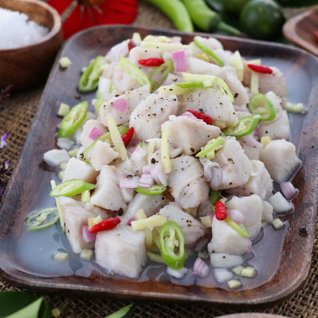
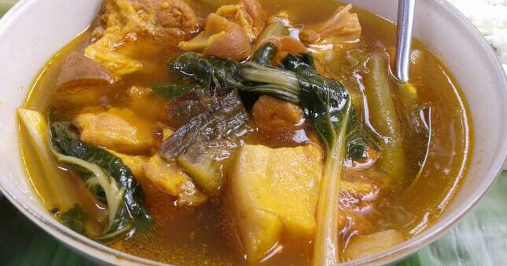
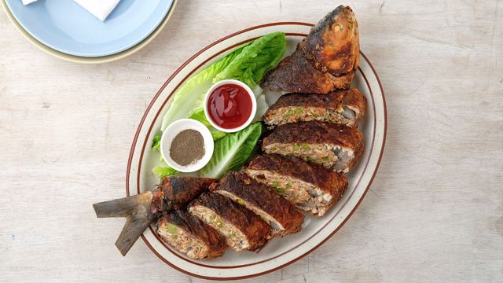

FILIPINO DISH
Adobong Baboy
Adobong Manok

Aroz Caldo
Bagnet
Bangsilog
Bicol Express

Bopis

Bulalo

Callos
Camaron Rebosado
Chicken Afritada

Chicken Inasal
Chicken Pastel

Crispy Pata

Curacha
Daing
Dinengdeng

Dinuguan
Embutido
Escabeche

Filipino Spaghetti
Ginataang Alimasag
Ginataang Gulay

Ginataang Hipon
Ginataang Manok

Ginataang Monggo
Giniling
Ginisang Monggo

Halabos na Hipon

Hamonado
Humba

Inihaw na Liempo
Inun-unan

Kadyos, Baboy, kag Langka
Kadyos, Manok, kag Ubad

Beef Kaldereta
Pork Kaldereta
Kare Kare

Kinilaw
Kinilnat
Kinunot
Kuhol sa Gata
Laing
Laswa

Lauya
Lechon Paksiw
Lumpiang Shanghai
Lumpiang Ubod
Mami
Mechado
Misua
Nilagang Baboy
Nilagang Baka

Paksiw na Bangus

Pancit Bihon
Pancit Canton
Pancit Estacion
Pancit Habhab

Pancit Palabok
Papaitan
Pares
Pata Tim
Piaparan

Pinakbet
Pochero
Pork Afritada
Rellenong Alimasag

Rellenong Bangus
Rellenong Manok

Sinanglay

Sinigang na Baboy

Sinigang na Hipon
Sisig
Sopas
Sotanghon
Soup No.5

Tapsilog
Tinolang Isda

Tinolang Manok
Tocilog

Tortang Talong
Odong
×